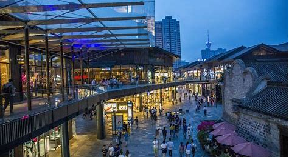

无忧无旅旅游导航网
面向大学生的旅游资讯网站，提供最新的旅游资讯，旅游攻略，旅游路线，旅游游记，旅游问答，旅游交流等信息，让您轻松寻找心仪的旅游体验！

官方微信：

成都太古里（Taikoo Li Chengdu）坐落 [12]成都中心地带，是太古地产（Swire Properties）旗下的一座开放式、低密度的街区形态购物中心。
成都太古里位于春熙路地铁站，尽享优越交通和人流优势，毗邻的千年古刹大慈寺更为其增添独特的历史和文化韵味。
成都太古里项目别具一格，纵横交织的里弄、开阔的广场空间，为呈现不同的都市脉搏，同时引进快里和慢里概念，树立国际大都会的潮流典范。值得把玩的生活趣味、大都会的休闲品位、林立的精致餐厅、历史文化及商业交融的独特氛围，让人于繁忙都市中心慢享美好时光。
成都太古里的“里”字意味“街巷”，顾名思义，正是这里纵横交织的里巷令成都太古里别具一格。在深刻理解成都这座城市以及成都消费者生活习惯的基础上，成都太古里对其业态进行了合理组合，特别引入“快里”、“慢里”概念。
“快里”由三条精彩纷呈地购物街贯通东西两个聚集人潮的广场，众多国际品牌将以独栋或复式店铺完整展示他们的旗舰形象，为成都人提供畅“快”淋漓地逛“街”享受。
“慢里”则是围绕大慈寺精心打造的慢生活里巷，以慢调生活为主题。值得把玩的生活趣味、大都会的休闲品味、林立的精致餐厅、历史文化及商业交融的独特氛围，呈现出成都太古里另一张动人面孔。
除了精致美食，“慢里”还将引入各类文化生活品牌，为繁忙的都市注入美好的生活理念。让忙碌的都市人在这里慢下脚步，邂逅生活的美好。
历史的古韵、人文的雅致、艺术的光辉和街巷的购物休闲氛围交融碰撞，一个丰富多彩、拥有不同层次、充满生活气息的公共空间应运而生，一个崭新的城市中心即将揭幕。精彩纷呈的活动逐一上演，生动有趣的生活从此开始。走进一片天空，体验大不同。
面向大学生的旅游资讯网站，提供最新的旅游资讯，旅游攻略，旅游路线，旅游游记，旅游问答，旅游交流等信息，让您轻松寻找心仪的旅游体验！
官方微信：